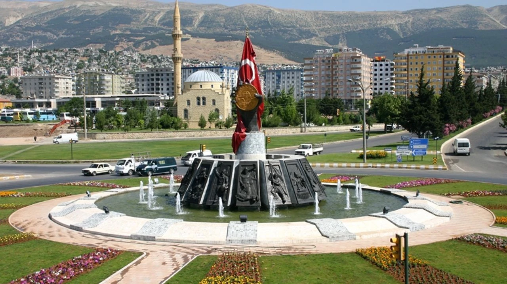
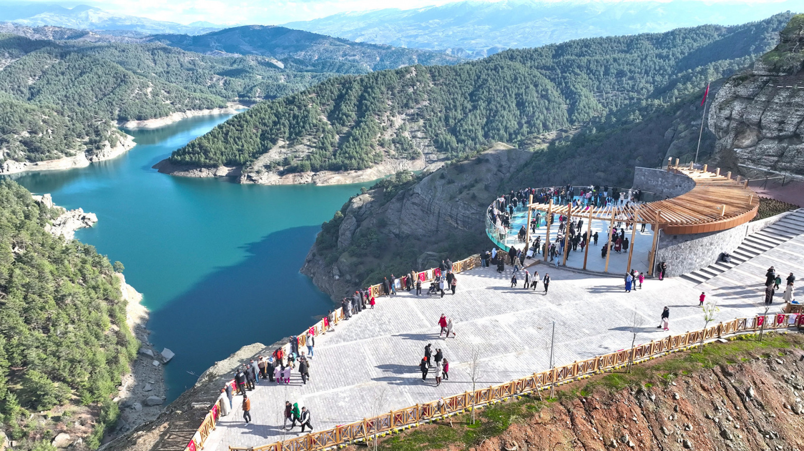
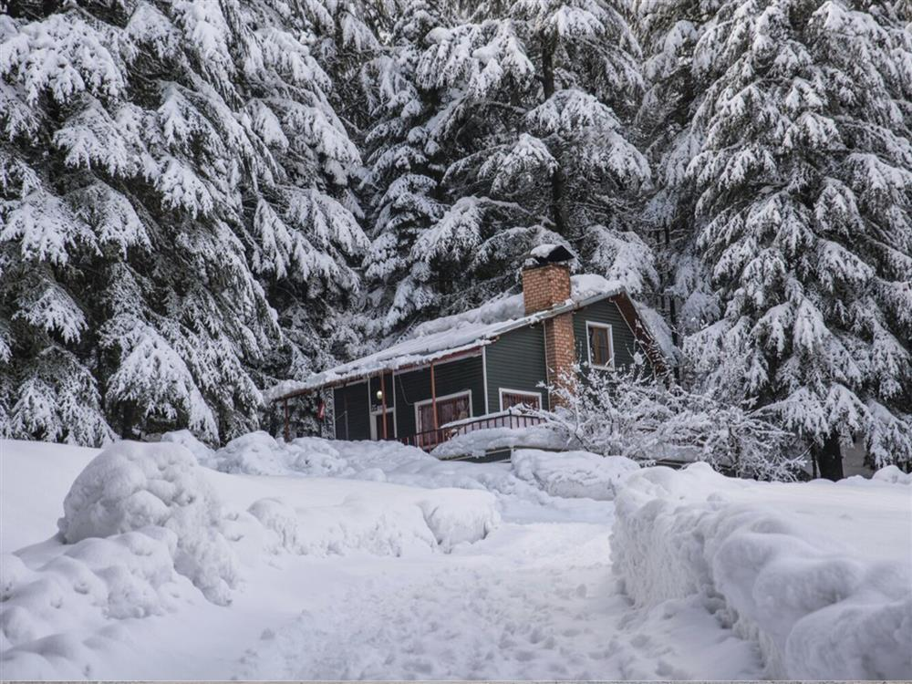
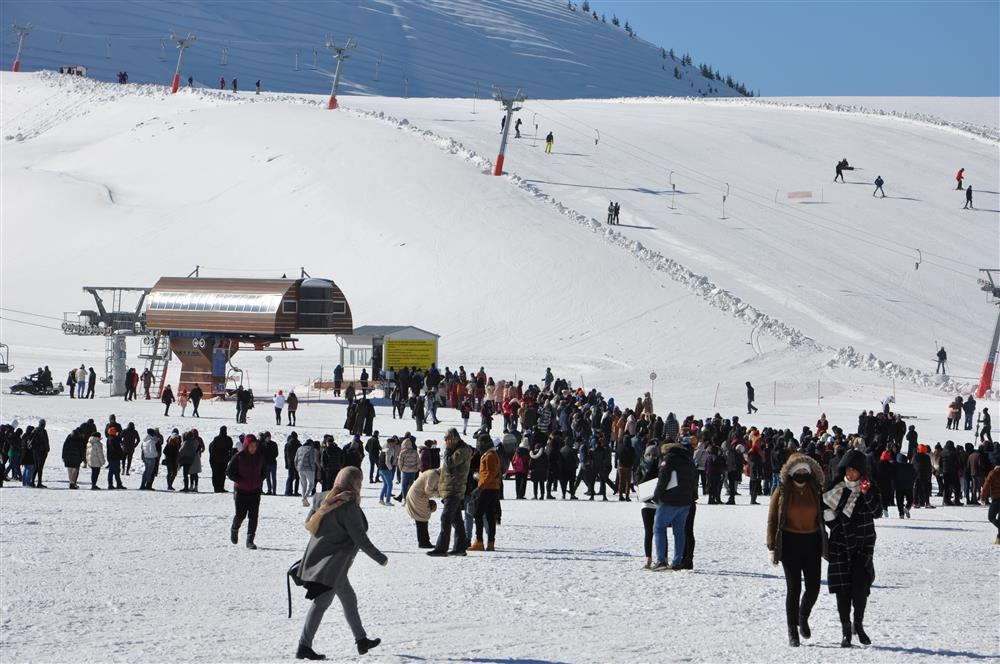

6 Şubat Depremi'nde hayatını kaybeden vatandaşlarımıza Allah'tan rahmet, yakınlarına baş sağlığı ve metanet diliyor , geride kalıp yaşam mücadelesi verenlere de sabır diliyorum.
Doğu Akdeniz'de bulunan Kahramanmaraş, Başkonuş ve Yavşan yaylaları, Kapıçam Tabiat Parkı, Körçoban Tabiatı Koruma Alanı, mağaraları, barajları, akarsuları, göllleri, dağları, Germanicia Mozaikleri, Eshab-ı Kehf Külliyesi, kaleleri, tarihi camileri ve çarşıları, geleneksel el sanatları, yöresel mutfağı ve coğrafi işaret olarak da tescil edilmiş olan tarhanası, pul biberi, dondurması gibi değerleri ile alternatif turizm açısından önemli bir potansiyele sahiptir. Akdeniz iklim kuşağında olmakla beraber Orta Anadolu ve Doğu Anadolu iklim kuşaklarıyla sınır teşkil etmektedir. Denize uzaklık ve yükselti nedeniyle değişikliğe uğramış karasallaşmış bir Akdeniz iklim tipi egemendir. Güney illerimize göre daha serindir. Berit, Engizek, Binboğa, Nur Dağı ve Ahır Dağı önemli yükseltilerdendir. Elbistan,Göksun ve Kahramanmaraş Ovaları ilin önemli ovalarıdır. Ceyhan Nehri il sınırları sınırları içinde doğmaktadır. Akarsu ve kaynak suları bakımından zengin bir görünüm teşkil etmektedir.
Döngel Mağaralarında yapılan araştırmalarda ele geçen buluntular yörede insan yerleşiminin üst paleolotik çağda başladığını, Neolitik ve İlk Tunç çağlarında sürdüğünü göstermektedir. Yöre Orta Tunç Çağında (İÖ 2000-1500) Suriye ve Mezopotamya'yı Kapodokya ile Anadolu'nun başka kesimlerine bağlayan önemli kervan yollarının kavşağında yer almıştır.
Markasi (Maraş) Hititlerin dağılma döneminde kurulan Hitit devletlerinden Gurgum'un merkeziydi. Gurgum kent devleti aralıklarla Urartu ve Asurlulara bağlanmıştır. İÖ 7. Yüzyılda Kimmer ve İskit istilasına uğrayan Markasi, bu yüzyılın sonunda Medlerin, İÖ 6. Yüzyılda da Perslerin yönetimine girmiştir. Uzun yıllar Perslerin Kapadokia Satraplığı sınırları içinde kaldıktan sonra İÖ 333 'te Makedonyalıların eline geçti. Kapadokialıların Makedonya yönetimine karşı ayaklanmasından yararlanan Pers kökenli Ariarathes bağımsızlığını ilan etmiştir. Ariarethes'in kurduğu Kappadokia Krallığı daha sonra Pontus devletine bağımlı hale gelmiştir. Markasi bu dönemde Roma ile Pontus arasında sürekli el değiştirmiştir.
Romalı Komutan Lucullus'un yörede kısa ömürlü bir krallık kurmasına karşın, Pompeius Markasi ile çevresini İÖ 64'te yeniden Roma topraklarına katmıştır. Romalılar imparator Caligula'nın onuruna kente Germanikeia adını verdiler. Germanikeia birçok kez Sasanilerin saldırısına uğradı, Bizans döneminde Marasion adıyla anılmıştır. Araplarla Bizanslılar arasında çekişmelere neden olan Marasion, 1079'da Urfa Haçlı komutanlığına bağlanmıştır. 1103'te Selçuklular'ın eline geçmiştir. Daha sonra kentte Danişmendli, Haçlı, Kilikya Krallığı, Eyyubiler, Memlükler hüküm sürmüştür.1339'da Dulkadiroğulları'nın yönetimine girdi. 16. Yüzyıl başlarında Osmanlı topraklarına katılmış ve 1522'de Zulkadiriye Eyaletine bağlanmıştır. Eyaletin adı 1831'de Maraş olarak değiştirilmiştir.
898'de Halep vilayetine bağlı bir sancak merkezi olan Maraş, Mondros Mütarekesinin imzalanması ile 22 şubat 1919 da İngiliz işgali altına girmiştir. İngilizler kısa bir süre sonra Musul'a karşılık Anadolu'nun güney kesiminden çekilmiştir. İşgale karşı düzenlenen Ulu Cami mitinginin ardından 30 Ekim 1919 da Fransız birlikleri Maraş'a girmiştir. İşgalci Fransızlarla onlarla işbirliği yapan Ermenilere karşı Sütçü İmam'ın başlattığı silahlı direniş halktan geniş bir destek görmüştür. Direnişi örgütlemek için 29 Kasım 1919'da Maraş Müdafaa-i Hukuk Cemiyeti kurulmuştur. Araplar ve Harabe Çatışmaları ile 21 Ocak 1920'de başlayan mücadele Fransızları çekilmeye zorlamıştır.
Kurtuluş Savaşı sırasında halkın gösterdiği direnişten dolayı TBMM tarafından 5 Nisan 1925 tarihinde şehre İstiklal Madalyası verilmiş ve 7 Şubat 1973'te adı Kahramanmaraş olarak değiştirilmiştir.
Kahramanmaraş’ta heybetli görünüme sahip olan Ali Kayası ve çevresi fotoğrafçıların uğrak yeri haline geldi. SEYAHAT HABERLERİ Elazığ'da etkili sis: Kartpostallık manzaralar oluştu Elazığ'da etkili sis: Kartpostallık manzaralar oluştu Yunanistan'a kapıda vize dönemi: 7 günlük turist vizesiyle gidilecek 10 ada Yunanistan'a kapıda vize dönemi: 7 günlük turist vizesiyle gidilecek 10 ada Kartpostallık görüntüler: Sakarya Nehri sis bulutuyla kaplandı Kartpostallık görüntüler: Sakarya Nehri sis bulutuyla kaplandı Ankara'daki Tulumtaş Mağarası ziyarete açıldı Ankara'daki Tulumtaş Mağarası ziyarete açıldı Uçurumun kenarından manzaraya dalmak: Ali Kayası - 2 Süleymanlı (Ilıca) Karayolunun 32. kilometresinde yer alan 'Ali Kayası' iki sarp yalçın kayanın arasında çağlayanlar halinde akan sularıyla fotoğrafçıların ilgi odağı oldu. Uçurumun kenarından manzaraya dalmak: Ali Kayası - 3 Etrafı çam ve meşeliklerle kaplı olan Ali Kayası’nın yüksekliği ise 148 metre. Uçurumun kenarından manzaraya dalmak: Ali Kayası - 4 Mavi ve yeşilin buluştuğu alana mutlaka herkesin gelip görmesi gerektiğini söyleyen fotoğrafçılar, “Ali Kayası muhteşem bir manzaraya sahip. Doğasıyla, havasıyla, manzarasıyla insanı cezp ediyor. Manzaraya güzellik katan Menzelet Baraj Gölü’yle birlikte kadrajımızda renkleniyor. Burayı mutlaka gelip görsünler. Fotoğraf çekilmek için ise harika bir yer” dediler.
Efsaneye göre İslam halifelerinden Hazreti Ali, atı Düldül'ün üzerinde dağdan dağa uçarak sefer yapmaktaydı. Rivayete göre, Hazreti Ali bu seferlerin birinde Kahramanmaraş-Göksun arasında kalan bir dağda konaklamak için atı Düldül'ün ayaklarını sertçe yere basması sonucunda, buradaki bir kaya üzerinde atının ayaklarının izi kaldığı söylentisi, kulaktan kulağa günümüze kadar gelmiştir. Söz konusu bu dağın tamamına yakın bir kısmı kayalardan oluşmaktadır. Rivayetten esinlenerek bu kayalıklara Ali Kayası adı verilmiştir.

Kahramanmaraş-Kayseri karayolunun 50. km.sinde yer alan ve araba ile 50 dakikada ulaşılan Döngel, üst üste ve birbirine bağlı üç mağaradan oluşuyor ve bu bölgedeki en önemli mağaralardan biridir. Kahramanmaraş topraklarında ilk yerleşim İ.Ö 40.000-10.000 Paleolitik Dönem'de bu mağaralarda başlıyor. Mağaranın tabandan tavana kadar olan yüksekliği ise 102 m. Mağaranın etekleri ceviz ve çınar ağaçları ile kaplı, yemyeşil bir dinlenme ve piknik alanıdır.
Başkonuş Yaylası, başta sümbül ve salep olmak üzere birçok endemik bitkiyi bünyesinde barındıran ve göçmen kuşların uğrak yeri olan doğa harikası bir yayladır. Köknar, sedir, meşe ve ardıç ağaçlarından oluşan orman, rengarenk çiçekleri ve endemik bitkileriyle doğal yapısını korurken geyiklere ve kuşlara da ev sahipliği yapmaktadır.
Başkonuş Yaylası 1987 yılında geyik üretme istasyonu olarak kurulmuş, yıllar sonra geyikler doğaya bırakılmıştır. Orman yürüyüşlerinde geyik gurupları ile karşılaşma ihtimali çok yüksektir.
Konaklama alanının rakımı 1325m civarındadır. Ardıç, Sedir ve Köknar ağaçlarının ürettiği oksijen sağlıklı bir ortam oluşmaktadır. Yaz ve kış aylarındaki farklı güzellikleri ile turistleri ağırlamaktadır. Yaylanın giriş kısmı A tipi mesire alanı olarak düzenlenmiştir. Bu alan sınırları içinde kır lokantası, bungalov orman evleri, spor alanları, çadır kamp alanı, karavan kamp alanı, piknik alanları, çocuk oyun alanları ve yürüyüş yolları bulunmaktadır. Kır lokantasında organik gıdalara önem verilerek keçi tereyağı, özel bal ve köy yumurtası ile organik beslenme ortamı sağlanmaktadır.
Kısa, uzun ve orta mesafeli olarak üç ayrı yürüyüş yolu sunularak misafirlerin performansına göre trekking tercihleri sunulmaktadır. Her an geyiklerle karşılaşıp unutulmaz fotoğraflar çekebileceğiniz yürüyüş yolları, bitiş noktasında da doyumsuz baraj manzarası ile sizlere ayrı bir seyir keyfi verecektir.
Konaklama alanından itibaren 4100 m yürüyerek Başkonuş Yaylası zirve noktasına (1850 m rakım) çıkıp, çevredeki muhteşem manzarayı seyrederken bulutların üzerinde olmanın keyfini yaşayabilirsiniz. İsterseniz, zirveye varmadan önce 1300 m yürüdükten sonra sağa ayrılan bir yolla 1200 m daha yürüyerek 1650 m rakımlı Sersem Yaylası’na da uğrayıp leyleklerin göç yolunda konakladıkları yerleri de görebilirsiniz.
Kahramanmaraş ili Dulkadiroğlu ilçesi Yedikuyular mevkisinde bulunan kayak merkezi; Kahramanmaraş kent merkezine 15 dakika (20 km) mesafededir. Kış sporlarıyla halkımızı buluşturmak, hem profesyonel hem de amatör sporcular için alanlar oluşturmak, yaz- kış keyifli tatil alanları oluşturma amacıyla 1.000.000 m2 alan üzerine dağ evleri, kayak kiralama birimi, sağlık birimi, restoran ve kafe, sosyal tesisler ile amatör ve profesyonel kayakçılar için pistler, kızak alanları inşa edilmiştir.